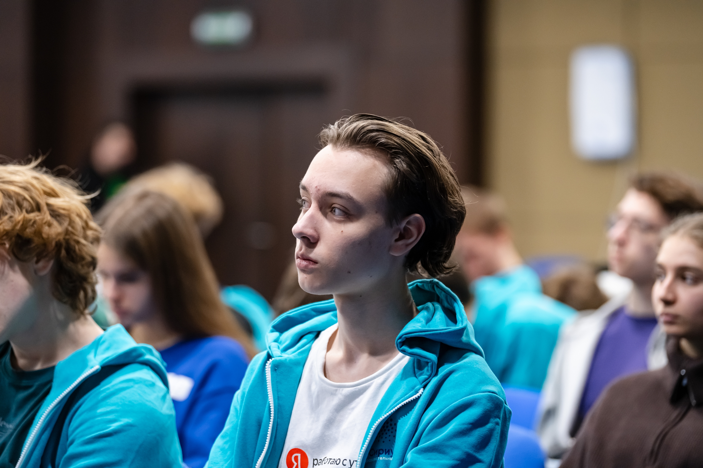

Савва Жданов
17 лет
Математика · Алгоритмическое программирование · Олимпиадное движение
Лицей 1502
Физико-математический профиль
2023 – 2025
Школа ЦПМ
Математический профиль
2025 – 2026 · выпускник
Олимпиадная математика
Шаг в будущее · 10 класс — призёр
Росатом · 11 класс — призёр
Газпром · 10 класс — победитель
Осенний ТурГор · 11 класс — призёр
Росатом · 10 класс — призёр
Региональный этап ВсОШ по математике 2025 — участник
Алгоритмическое программирование
Чемпионат «Рукод»
· дивизион AB · 5 решённых задач · 68 место
Команда «Проход в 10+10+А»
Турнир ФКН по программированию
(для школьников) — призёр
Команда «Цитрусы»
Дополнительное обучение
Участник программ ОЦ «Сириус» по математике
Летняя школа по программированию (ЛШОП) · Университет Иннополис · параллель B
Выпускник кружка Яндекса по олимпиадному программированию 2026 · параллель B
© Савва Жданов, 2026 · портфолио